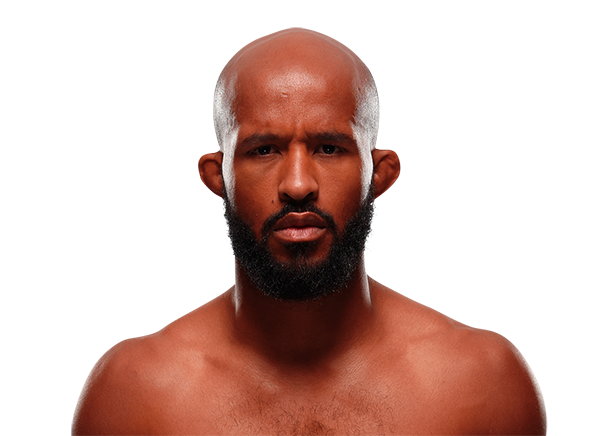

Demetrious Johnson es uno de los peleadores más técnicos y dominantes en la historia de las artes marciales mixtas. Nació el 13 de agosto de 1986 en Kentucky, Estados Unidos. Es conocido por su increíble velocidad, inteligencia dentro del octágono y habilidades completas en todas las áreas del combate.

Johnson se convirtió en el primer campeón de la división peso mosca de la UFC. Durante su reinado defendió el título en numerosas ocasiones, estableciendo uno de los récords de defensas de campeonato más impresionantes en la historia del deporte.
Su estilo combina striking muy preciso con una lucha extremadamente técnica y transiciones rápidas hacia sumisiones. Esto lo convirtió en uno de los peleadores más difíciles de derrotar durante muchos años.
Muchos analistas consideran a Demetrious Johnson como uno de los peleadores más completos técnicamente que han competido en las artes marciales mixtas.
Peso mosca (125 lb / 57 kg)
Múltiples defensas del campeonato mundial de peso mosca.